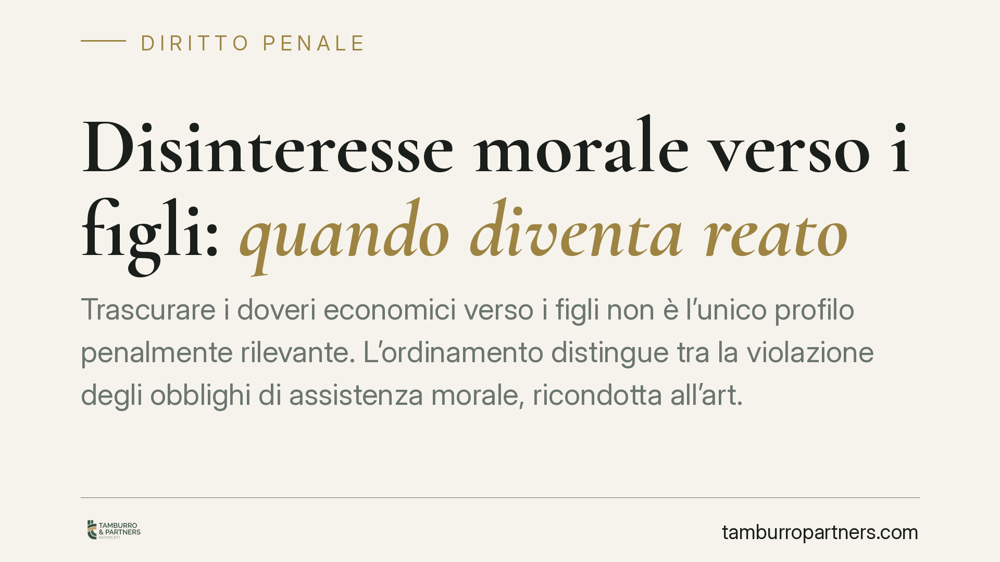

Disinteresse morale verso i figli: quando diventa reato
Trascurare i doveri economici verso i figli non è l'unico profilo penalmente rilevante. L'ordinamento distingue tra la violazione degli obblighi di assistenza morale, ricondotta all'art. 570 del codice penale, e l'omesso versamento dell'assegno, oggi disciplinato dall'art. 570-bis. Capire questa differenza aiuta a leggere correttamente situazioni familiari conflittuali e le loro possibili conseguenze penali.

Il fatto e il tema giuridico
Nei procedimenti che nascono da separazioni e divorzi conflittuali ricorre una domanda: il genitore che si disinteressa dei figli, al di là del denaro, commette un reato? La risposta richiede di distinguere due piani che il linguaggio comune tende a confondere: l'assistenza morale e il mantenimento economico.
Per correttezza segnaliamo che su questa materia circolano riferimenti giurisprudenziali non sempre verificabili. In questa sede ci atteniamo al dato normativo e agli orientamenti consolidati della Corte di Cassazione, senza ancorare l'analisi a singole pronunce non confermate.
Inquadramento normativo
L'art. 570 del codice penale punisce chi, abbandonando il domicilio domestico o serbando una condotta contraria all'ordine o alla morale delle famiglie, si sottrae agli obblighi di assistenza inerenti alla responsabilità genitoriale (nel testo storico la norma parlava di "potestà dei genitori", espressione superata dal D.Lgs. 154/2013). Il secondo comma colpisce, tra l'altro, chi fa mancare i mezzi di sussistenza ai figli minori.
Occorre quindi distinguere due profili all'interno della stessa norma: la violazione degli obblighi di assistenza morale (primo comma) e la sottrazione dei mezzi di sussistenza (secondo comma, n. 2), che riguarda la privazione del necessario per vivere.
L'art. 570-bis c.p., introdotto nel 2018, sanziona invece in modo specifico il mancato versamento dell'assegno dovuto in sede di separazione o divorzio. È la norma che oggi presidia il tipico inadempimento dell'obbligo economico stabilito dal giudice civile.
La giurisprudenza riconduce il disinteresse morale all'area dell'art. 570 c.p., distinguendolo dall'inadempimento economico dell'art. 570-bis. Va però usata cautela: non ogni negligenza affettiva assume rilievo penale, e l'affermazione di un "reato autonomo" di disinteresse morale va calibrata sul caso concreto, non data per pacifica in termini assoluti.
Implicazioni pratiche
La distinzione non è teorica. Se i due profili tutelano beni giuridici diversi — da un lato gli obblighi di assistenza morale, dall'altro il regolare adempimento economico — possono in linea di principio concorrere.
In questi casi non opera il ne bis in idem, cioè il divieto di essere giudicati due volte per lo stesso fatto. Il ne bis in idem presuppone l'identità del fatto storico; qui i fatti sono distinti: una cosa è non versare l'assegno, altra è sottrarsi del tutto alla relazione e ai doveri di cura verso il figlio. Quando i comportamenti sono realmente diversi, si configura un concorso di reati, con autonoma valutazione di ciascuno.
Resta un punto fermo che merita attenzione: la rilevanza penale non è automatica. Non ogni screzio, distanza o difficoltà relazionale integra un illecito. La soglia penale richiede una condotta grave e qualificata, tale da tradursi in un'effettiva sottrazione ai doveri genitoriali, non in una generica inadeguatezza affettiva.
Per il genitore destinatario di una denuncia, ciò significa che la contestazione va letta con precisione: occorre individuare quale profilo gli si addebita, se morale, economico o entrambi, perché la difesa cambia di conseguenza.
Cosa fare in concreto
- Verifica la qualificazione del fatto: distingui se la contestazione riguarda l'assistenza morale (art. 570 c.p.) o l'omesso versamento dell'assegno (art. 570-bis c.p.), perché gli elementi da provare sono diversi.
- Documenta in modo oggettivo: raccogli prove concrete dei contatti, delle iniziative di cura e dei tentativi di esercizio del ruolo genitoriale, oltre alle ricevute dei versamenti.
- Valuta la gravità della condotta: ricorda che la soglia penale richiede un disinteresse qualificato, non una semplice difficoltà relazionale.
- Coordina il profilo civile e quello penale: è opportuno che le scelte in sede di separazione o divorzio siano lette anche alla luce delle possibili ricadute penali.
- Fai qualificare i fatti in modo tecnico prima di assumere posizioni, poiché la corretta sussunzione della condotta nelle due norme è decisiva.
La materia tocca profili penali e familiari che si intrecciano. Una lettura affrettata rischia di confondere un inadempimento economico con un disinteresse morale, o viceversa, con conseguenze rilevanti sul piano processuale.
Disclaimer
Contributo informativo a cura di Tamburro & Partners - Avv. Giuseppe Tamburro. Non costituisce parere legale.
Ogni condominio ha una storia a sé.
Se gestisci un'amministrazione e vuoi un confronto su una specifica questione condominiale, scrivi allo studio. Ti rispondiamo entro un giorno lavorativo.